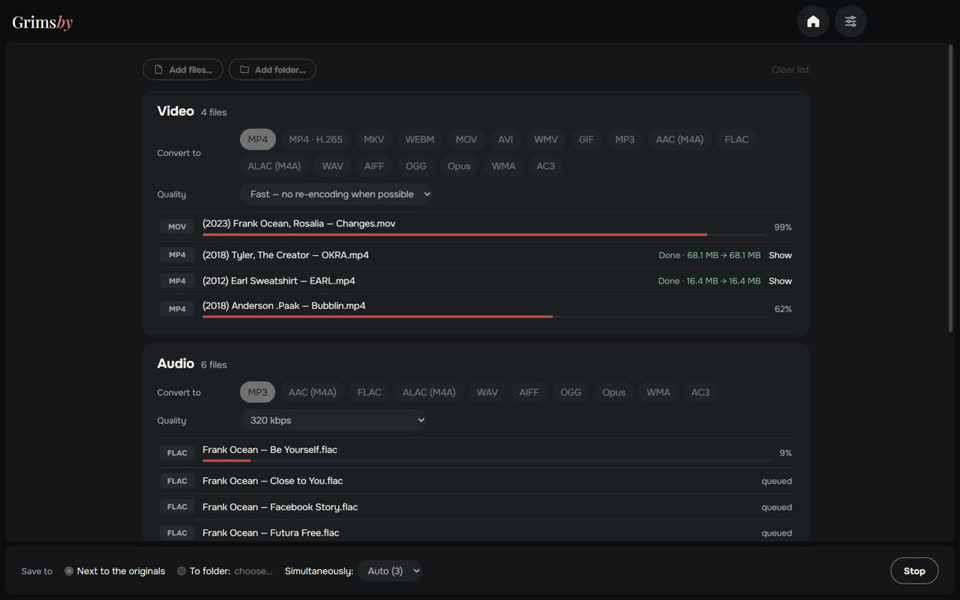
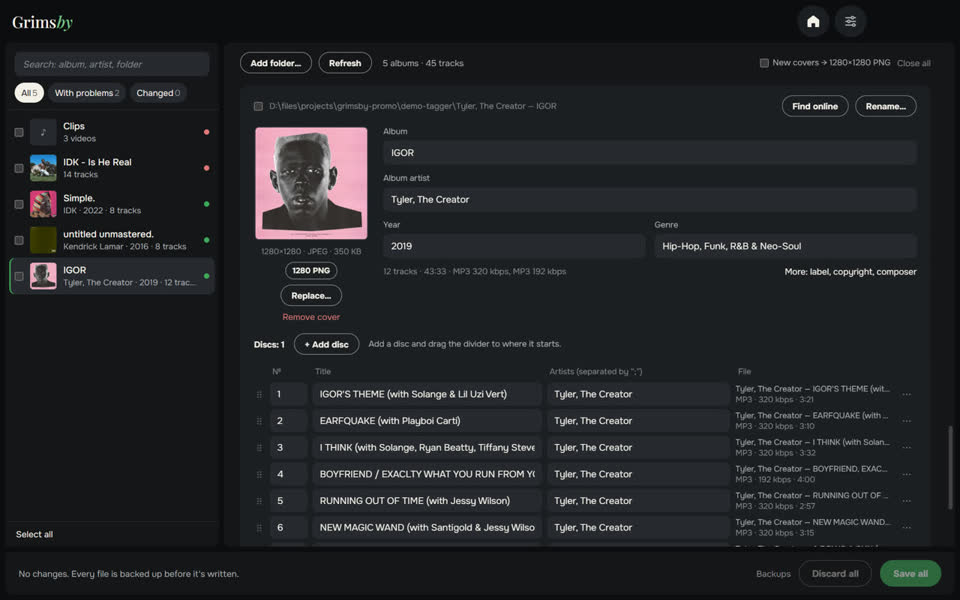

Three free offline apps in the same style — for people who keep their own music library.

Grimsby Player
Offline music & video player for your downloaded collection
A player for people who download and collect music. Point it at your music folder, and your collection becomes a library that looks like a streaming service: albums by year, artist pages, music videos next to albums. Everything stays on your computer — no accounts, no subscriptions, no ads.
- Albums by release year and artist pages with albums, videos, concerts and features
- Music videos, concerts and album films linked to albums automatically
- Gapless playback, volume leveling and a 10-band equalizer
- Smart radio playlists that make themselves
- Listening and collection stats, album stats and a yearly recap
- Converter, duplicate finder and library health check built in

Grimsby Converter
Video, audio, photos and documents — converted offline
A file converter that works right on your computer. Drop in files and whole folders in any mix: they are sorted into groups, each group gets its own format and quality, and everything is converted with one button. Nothing is uploaded anywhere.
- Video, audio, photos, documents, spreadsheets and presentations in one window
- Whole folders at once, sorted into groups automatically
- Fast mode: MOV to MP4 in seconds with no quality loss
- Dozens of formats: from DSD audio and M4B audiobooks to Photoshop PSD and Keynote
- Originals stay untouched; no size limits, no watermarks
- Several files at once — as many as your processor can handle


Grimsby Tagger
Batch tag editor: albums, covers, file names
A tag editor for your music library that works album by album, not file by file. Point it at a folder — it groups the files into albums, shows each one as a card with its cover and highlights what’s wrong. Fix everything and save it with one button.
- Albums sort themselves out: discs, editions and stray files
- Problems in plain sight: empty fields, mixed values, missing covers, broken encoding
- One-click fixes from file and folder names
- Find the album online and match its tracks to your files
- Rename files and folders by a template, with undo
- Videos too: MP4, MKV, MOV and more — tags and covers, never re-encoded
